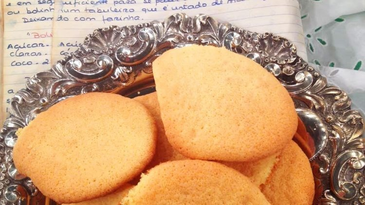

Doces · Biscoitos
Esquecidos

Ingredientes
- 1 ½ xícara de açúcar
- 4 gemas
- 1 clara
- 4 xícaras de farinha de trigo
- 1 pitada de sal
- 1 colher (sopa) de água
- Manteiga para untar
- Farinha de trigo para polvilhar
Modo de preparo
- Preaqueça o forno em temperatura média (180 °C). Na tigela da batedeira, coloque o açúcar e as gemas e bata, em velocidade média, até formar um creme esbranquiçado.
- Junte a clara, sem parar de bater. Deixe bater bem (cerca de 5 minutos).
- Desligue a batedeira, junte a farinha e o sal peneirados e misture com as mãos até obter uma massa ligada e que possa ser enrolada com as mãos. Acrescente a água, se a massa não estiver dando ponto de enrolar.
- Faça bolinhas e coloque-as afastadas umas das outras em duas assadeiras untadas com manteiga e polvilhadas com farinha de trigo.
- Leve ao forno preaquecido por 25 minutos. Retire do forno, deixe esfriar e congele.
Observação
Como a massa é mole, polvilhe as mãos com farinha de trigo na hora de enrolar os biscoitos, para evitar que eles grudem. Congelamento: coloque os biscoitinhos num saco plástico, retire o ar e vede bem; etiquete e congele. Descongelamento: em temperatura ambiente por 1 hora e, depois, leve ao forno por 6 minutos.